FreeRTOS完全开发手册之内部机制
资料下载
课程介绍
对于 FreeRTOS 的掌握可以分为 3 个层次：
- 第 1 层：知道怎么使用相关 API 函数
- 第 2 层：知道内部机制
- 第 3 层：掌握代码实现的细节，能够移植
百问网科技在嵌入式操作系统领域深耕 13 年，能够使用 2 天(每天 6 小时)让你达到第 2 层。 这让你能够在日常开发中使用 FreeRTOS 并解决疑难问题。
FreeRTOS的任务管理与调度、任务间通信(消息队列)、任务间同步(信号量/互斥量/事件集)的方法，核心都是：
- 链表
基于链表，可以快速而深入地理解FreeRTOS 。
1. RTOS 概念及任务的引入
1.1 RTOS的概念
1.1.1 用人来类比单片机程序和RTOS
妈妈要一边给小孩喂饭，一边加班跟同事微信交流，怎么办？
对于单线条的人，不能分心、不能同时做事，她只能这样做：
- 给小孩喂一口饭
- 瞄一眼电脑，有信息就去回复
- 再回来给小孩喂一口饭
- 如果小孩吃这口饭太慢，她回复同事的信息也就慢了，被同事催：你半天都不回我？
- 如果回复同事的信息要写一大堆，小孩就着急得大哭起来。
这种做法，在软件开发上就是一般的单片机开发，没有用操作系统。
对于眼明手快的人，她可以一心多用，她这样做：
- 左手拿勺子，给小孩喂饭
- 右手敲键盘，回复同事
- 两不耽误，小孩“以为”妈妈在专心喂饭，同事“以为”她在专心聊天
- 但是脑子只有一个啊，虽然说“一心多用”，但是谁能同时思考两件事？
- 只是她反应快，上一秒钟在考虑夹哪个菜给小孩，下一秒钟考虑给同事回复什么信息
这种做法，在软件开发上就是使用操作系统，在单片机里叫做使用RTOS。
RTOS的意思是：Real-time operating system，实时操作系统。
我们使用的Windows也是操作系统，被称为通用操作系统。使用Windows时，我们经常碰到程序卡死、停顿的现象，日常生活中这可以忍受。
但是在电梯系统中，你按住开门键时如果没有即刻反应，即使只是慢个1秒，也会夹住人。
在专用的电子设备中，“实时性”很重要。
1.1.2 程序简单示例
// 经典单片机程序
void main()
{
while (1)
{
喂一口饭();
回一个信息();
}
}
------------------------------------------------------
// RTOS程序
int a;
喂饭() 栈A
{
int b = 2;
int c;
c = b+2;==> 1. b+2, 2. c = new val
---------------> 切换
while (1)
{
喂一口饭();
}
}
回信息() 栈B
{
int b;
while (1)
{
回一个信息();
}
}
void main()
{
create_task(喂饭);
create_task(回信息);
start_scheduler();
while (1)
{
sleep();
}
}
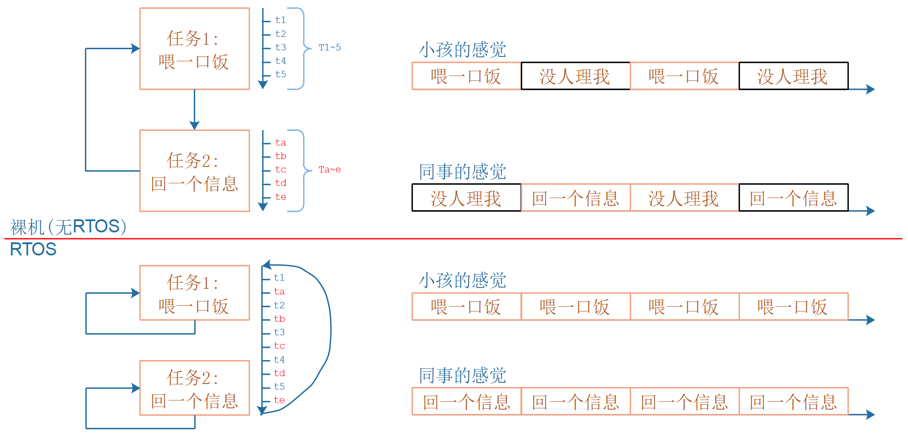
1.1.3 提出问题
什么叫任务？回答这个问题之前，先想想怎么切换任务？怎么保存任务？
- 任务是函数吗？函数需要保存吗？函数在Flash上，不会被破坏，无需保存
- 函数执行到了哪里？需要保存吗？需要保存
- 函数里用到了全局变量，全局变量需要保存吗？全局变量在内存上，还能保存到哪里去？全局变量无需保存
- 函数里用到了局部变量，局部变量需要保存吗？局部变量在栈里，也是在内存里，只要避免栈不被破坏即可，局部变量无需保存
- 运算的中间值需要保存吗？中间值保存在哪里？在CPU寄存器里，另一个任务也要用到CPU寄存器，所以CPU寄存器需要保存
- 函数运行了哪里：它也是一个CPU寄存器，名为"PC"
- 汇总：CPU寄存器需要保存！
- 保存在哪里？保存在任务的栈里
- 怎么理解CPU寄存器、怎么理解栈？
1.2 ARM 架构及汇编
1.2.1 ARM架构
ARM芯片属于精简指令集计算机(RISC：Reduced Instruction Set Computor)，它所用的指令比较简单，有如下特点：
① 对内存只有读、写指令
② 对于数据的运算是在CPU内部实现
③ 使用RISC指令的CPU复杂度小一点，易于设计
比如对于a=a+b这样的算式，需要经过下面4个步骤才可以实现：
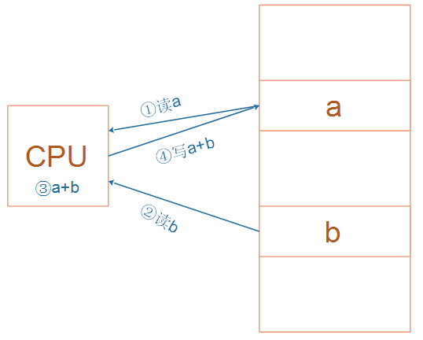
细看这几个步骤，有些疑问：
① 读a，那么a的值读出来后保存在CPU里面哪里？
② 读b，那么b的值读出来后保存在CPU里面哪里？
③ a+b的结果又保存在哪里？
我们需要深入ARM处理器的内部。简单概括如下，我们先忽略各种CPU模式(系统模式、用户模式等等)。
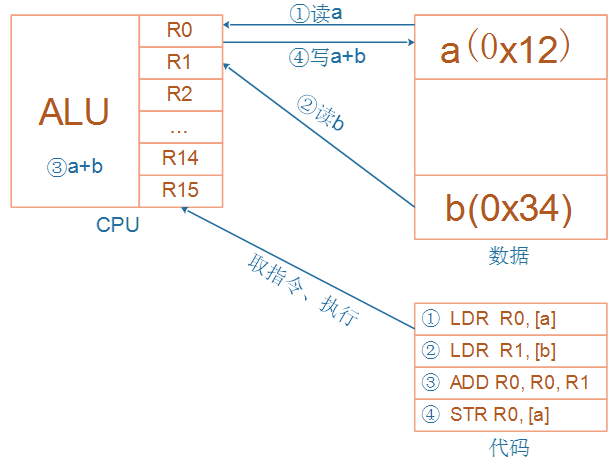
CPU运行时，先去取得指令，再执行指令：
① 把内存a的值读入CPU寄存器R0
② 把内存b的值读入CPU寄存器R1
③ 把R0、R1累加，存入R0
④ 把R0的值写入内存a
CPU内部有r0到r15寄存器，这些寄存器有别名(下图来自百度文库)：
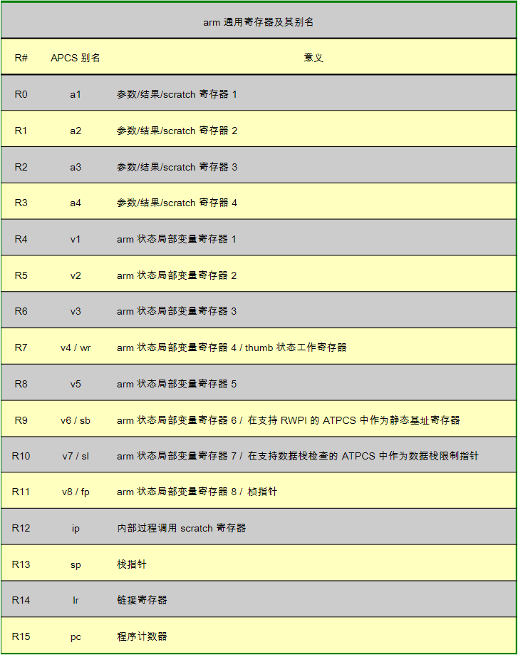
1.2.2 几条汇编指令
需要我们掌握的汇编指令并不多，只有几条：
- 读内存指令：LDR，即Load之意
- 写内存指令：STR，即Store之意
- 加减指令：ADD、SUB
- 跳转：BL，即Branch And Link
- 入栈指令：PUSH
- 出栈指令：POP
视频演示。
汇编并不复杂：
加载/存储指令(LDR/STR)
- 加载指令LDR：
LDR r0,[addrA]意思是将地址addrA的内容加载(存放)到r0里面- 存储指令STR：
STR r0,[addrA]意思是将r0中的值存储到地址addrA上加法运算指令(ADD)
- 加法运算指令(ADD)：
ADD r0,r1,r2意思为：r0=r1+r2- 减法运算指令(SUB)：
SUB r0,r1,r2意思为：r0=r1-r2寄存器入栈/出栈指令(PUSH/POP)
- 寄存器入栈(PUSH)：
PUSH {r3，lr}意思是将寄存器r3和pc写入内存栈- 本质是写内存STR指令，高标号寄存器写入高地址的栈里，低标号寄存器写入低地址的栈里
- lr即r14，写入地址为
sp-4的内存，然后：sp=sp-4- r3，写入地址为
sp-4的内存，然后：sp=sp-4- 寄存器出栈指令(POP)：
POP {r3，pc}意思是取出内存栈的数据放入r3和pc中- 本质是读内存LDR指令，高标号寄存器的内容来自高地址的栈，低标号寄存器的内容来自低地址的栈
- 读地址为
sp的内存存入r3，然后：sp=sp+4- 读地址为
sp的内存存入pc，然后：sp=sp+4
1.3 函数运行的本质
如下是一个简单的程序，在配套源码的01_arm_stack。
主函数里调用函数add_val()：
void add_val(int *pa, int *pb)
{
volatile int tmp;
tmp = *pa;
tmp = tmp + *pb;
*pa = tmp;
}
int main()
{
int a = 1;
int b = 2;
add_val(&a, &b);
return 0;
}
其中调用函数add_val()的汇编代码如下，我们加上了注释：
1 /* enter */
2 PUSH {r3,lr} //进入函数，寄存器r3、lr的值，都存入内存的栈中(lr保存程序返回地址)
3
4 /* tmp = *pa; */
5 LDR r2,[r0,#0x00] //将寄存器r0的值存放到r2，其中r0是函数的第一个参数值(ARM ATPCS规定)
6 STR r2,[sp,#0x00] //将寄存器r2的值存储到sp指向的内存
7
8 /* tmp = tmp + *pb; */
9 LDR r2,[r1,#0x00] //将寄存器r1的值存放到r2，其中r1是函数的第二个参数值(ARM ATPCS规定)
10 LDR r3,[sp,#0x00] //将寄存器sp指向内存的值存放到r3
11 ADD r2,r2,r3 //将寄存器r2和r3相加，保存到r2
12 STR r2,[sp,#0x00] //将寄存器r2的值存储到sp指向的内存
13
14 /* *pa = tmp; */
15 LDR r2,[sp,#0x00] //将寄存器sp指向内存的值存放到r2
16 STR r2,[r0,#0x00] //将寄存器r2的值存储到r0，其中r0将作为函数返回值(ARM ATPCS规定)
17
18 /* quit */
19 POP {r3,pc} //退出函数，获取内存的栈中的数据放入r3和pc中(此时pc为lr,实现了函数返回)
视频里动态演示，重点演示栈的使用。
1.4 什么叫任务？ 怎么保存任务？
现在可以回答这个问题了。
什么叫任务：运行中的函数、被暂停运行的函数
怎么保存任务：把暂停瞬间的CPU寄存器值，保存进栈里。
视频里动态演示：在函数的某个位置，怎么保存当前环境？
2. 创建任务的函数
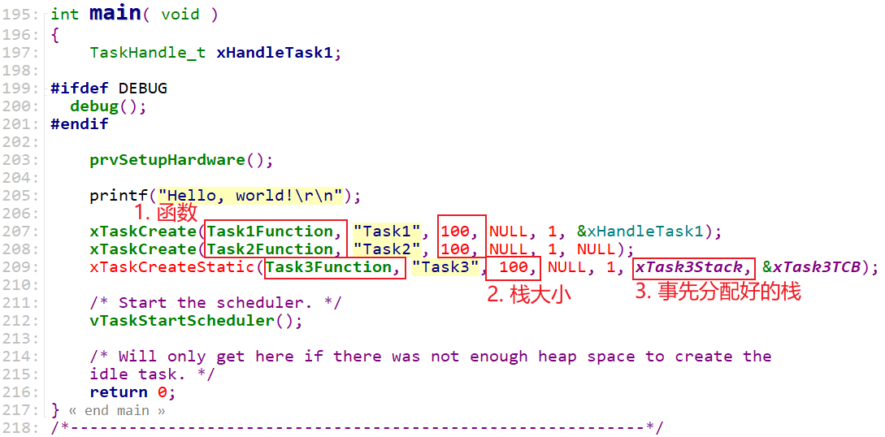
2.1 参数解析
- 任务做什么？需要提供函数
- 任务随时会别切换，哪些寄存器保存在哪里？需要提供栈：可以实现分配(比如使用数组)，也可以动态分配
- 怎么记录这些信息：栈在哪里？需要有一个任务结构体
2.1.1 任务结构体
TCB_t用来表示一个任务，它的重要成员如下：
- pxTopOfStack：执行栈里的最后一个元素
- xStateListItem：通过它把当前任务放入某个状态链表(Ready, Blocked, Suspended)
- xEventListItem：比如任务在等待队列A，则通过xEventListItem把自己放入队列A的链表
- uxPriority：任务的原始优先级
- pxStack：栈的起始位置
- pxEndOfStack：栈顶，栈的最高的、有效地址
- uxBasePriority：任务的当前优先级
提问：在TCB_t里怎么没看到函数指针？初始化任务时，把函数指针存入了栈里。
typedef struct tskTaskControlBlock /* The old naming convention is used to prevent breaking kernel aware debuggers. */
{
volatile StackType_t * pxTopOfStack; /*< Points to the location of the last item placed on the tasks stack. THIS MUST BE THE FIRST MEMBER OF THE TCB STRUCT. */
#if ( portUSING_MPU_WRAPPERS == 1 )
xMPU_SETTINGS xMPUSettings; /*< The MPU settings are defined as part of the port layer. THIS MUST BE THE SECOND MEMBER OF THE TCB STRUCT. */
#endif
ListItem_t xStateListItem; /*< The list that the state list item of a task is reference from denotes the state of that task (Ready, Blocked, Suspended ). */
ListItem_t xEventListItem; /*< Used to reference a task from an event list. */
UBaseType_t uxPriority; /*< The priority of the task. 0 is the lowest priority. */
StackType_t * pxStack; /*< Points to the start of the stack. */
char pcTaskName[ configMAX_TASK_NAME_LEN ]; /*< Descriptive name given to the task when created. Facilitates debugging only. */ /*lint !e971 Unqualified char types are allowed for strings and single characters only. */
#if ( ( portSTACK_GROWTH > 0 ) || ( configRECORD_STACK_HIGH_ADDRESS == 1 ) )
StackType_t * pxEndOfStack; /*< Points to the highest valid address for the stack. */
#endif
#if ( portCRITICAL_NESTING_IN_TCB == 1 )
UBaseType_t uxCriticalNesting; /*< Holds the critical section nesting depth for ports that do not maintain their own count in the port layer. */
#endif
#if ( configUSE_TRACE_FACILITY == 1 )
UBaseType_t uxTCBNumber; /*< Stores a number that increments each time a TCB is created. It allows debuggers to determine when a task has been deleted and then recreated. */
UBaseType_t uxTaskNumber; /*< Stores a number specifically for use by third party trace code. */
#endif
#if ( configUSE_MUTEXES == 1 )
UBaseType_t uxBasePriority; /*< The priority last assigned to the task - used by the priority inheritance mechanism. */
UBaseType_t uxMutexesHeld;
#endif
#if ( configUSE_APPLICATION_TASK_TAG == 1 )
TaskHookFunction_t pxTaskTag;
#endif
#if ( configNUM_THREAD_LOCAL_STORAGE_POINTERS > 0 )
void * pvThreadLocalStoragePointers[ configNUM_THREAD_LOCAL_STORAGE_POINTERS ];
#endif
#if ( configGENERATE_RUN_TIME_STATS == 1 )
uint32_t ulRunTimeCounter; /*< Stores the amount of time the task has spent in the Running state. */
#endif
#if ( configUSE_NEWLIB_REENTRANT == 1 )
/* Allocate a Newlib reent structure that is specific to this task.
* Note Newlib support has been included by popular demand, but is not
* used by the FreeRTOS maintainers themselves. FreeRTOS is not
* responsible for resulting newlib operation. User must be familiar with
* newlib and must provide system-wide implementations of the necessary
* stubs. Be warned that (at the time of writing) the current newlib design
* implements a system-wide malloc() that must be provided with locks.
*
* See the third party link http://www.nadler.com/embedded/newlibAndFreeRTOS.html
* for additional information. */
struct _reent xNewLib_reent;
#endif
#if ( configUSE_TASK_NOTIFICATIONS == 1 )
volatile uint32_t ulNotifiedValue[ configTASK_NOTIFICATION_ARRAY_ENTRIES ];
volatile uint8_t ucNotifyState[ configTASK_NOTIFICATION_ARRAY_ENTRIES ];
#endif
/* See the comments in FreeRTOS.h with the definition of
* tskSTATIC_AND_DYNAMIC_ALLOCATION_POSSIBLE. */
#if ( tskSTATIC_AND_DYNAMIC_ALLOCATION_POSSIBLE != 0 ) /*lint !e731 !e9029 Macro has been consolidated for readability reasons. */
uint8_t ucStaticallyAllocated; /*< Set to pdTRUE if the task is a statically allocated to ensure no attempt is made to free the memory. */
#endif
#if ( INCLUDE_xTaskAbortDelay == 1 )
uint8_t ucDelayAborted;
#endif
#if ( configUSE_POSIX_ERRNO == 1 )
int iTaskErrno;
#endif
} tskTCB;
2.2 创建任务的过程
创建任务的过程，就是构造栈的过程。
函数调用关系如下：
xTaskCreate
// 1. 分配任务结构体
TCB_t * pxNewTCB;
pxNewTCB = ( TCB_t * ) pvPortMalloc( sizeof( TCB_t ) );
// 2. 分配栈
pxNewTCB->pxStack = ( StackType_t * ) pvPortMallocStack( ... );
// 3. 初始化任务栈，即构造TCB_t的内容
prvInitialiseNewTask
// 3.1 初始化优先级、队列等等
pxNewTCB->uxPriority = uxPriority;
vListInitialiseItem( &( pxNewTCB->xStateListItem ) );
vListInitialiseItem( &( pxNewTCB->xEventListItem ) );
// 3.2 初始化栈
pxNewTCB->pxTopOfStack = pxPortInitialiseStack(...)
// 4. 放入就绪链表
prvAddNewTaskToReadyList( pxNewTCB );
3. 任务的调度机制(核心是链表)
3.1 使用链表来管理任务
有很多任务都想运行，优先级各不相同，怎么管理它们？
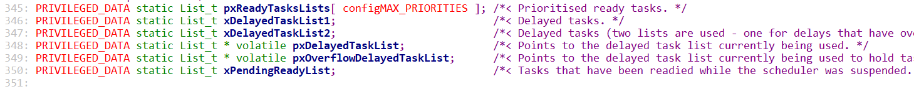
每个优先级，都有一个就绪链表：pxReadyTasksLists[优先级]，
任务被创建时，要使用prvAddNewTaskToReadyList()来把它放入对应的就绪链表，调用过程为：
xTaskCreate
prvAddNewTaskToReadyList
listINSERT_END( &( pxReadyTasksLists[ ( pxTCB )->uxPriority ] ), &( ( pxTCB )->xStateListItem ) );
3.2 使用链表来理解调度机制
3.2.1 第1个任务是谁？
最高优先级的ready list里最后一个创建的任务：
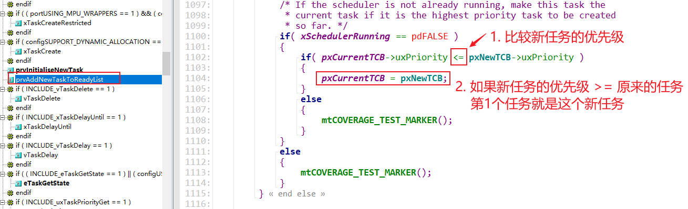
3.2.2 抢占
最高优先级的ready list里的第1个任务永远可以即刻执行：
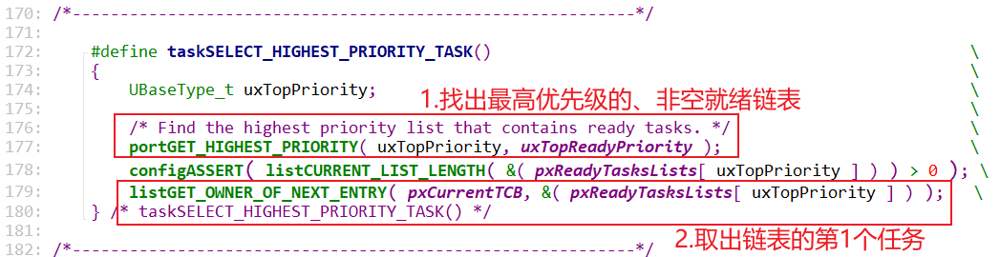
3.3 使用链表和Tick来理解时间片轮转
FreeRTOS的任务轮转时：每个任务运行一个Tick。
3.5 任务状态的切换(链表+Tick)
参考程序：FreeRTOS_06_taskdelay
3.5.1 任务状态切换图
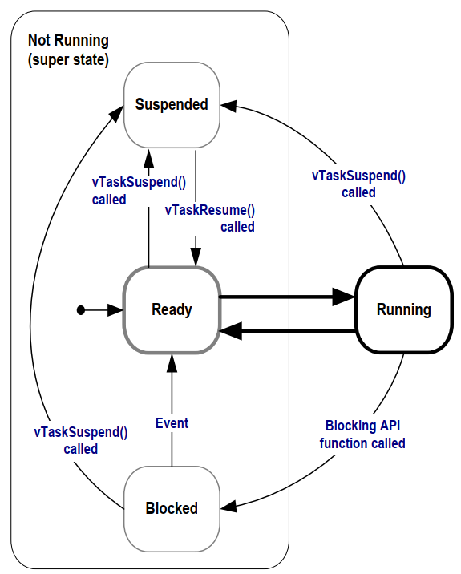
3.5.2 核心：链表
4. 消息队列(queue)
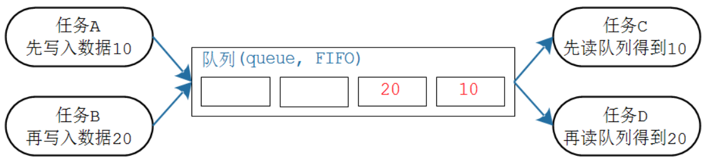
4.1 核心是：关中断、环形缓冲区、链表
4.1.1 怎么互斥访问数据
简单粗暴：关中断
示例：FreeRTOS_08_queue
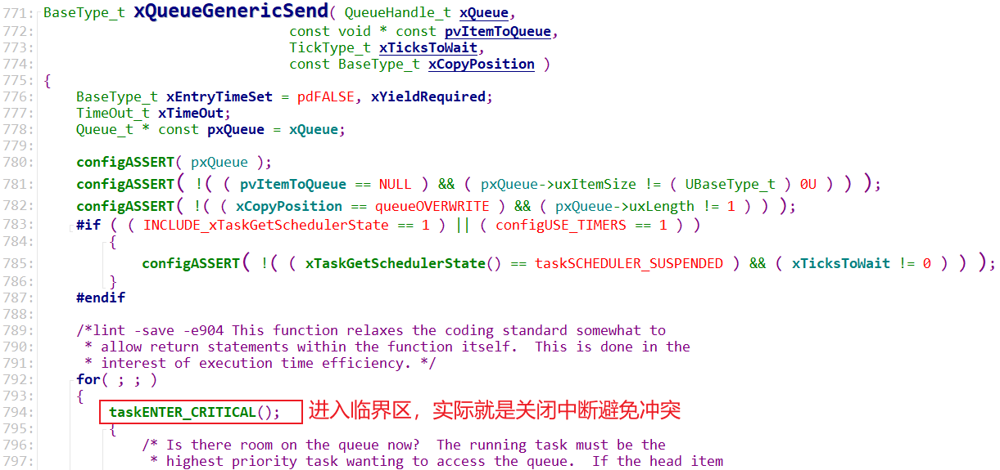
4.1.2 怎么传递数据
使用环形缓冲区传递数据。
视频里讲解。
4.1.3 怎么休眠/唤醒
有两个链表：
- 写队列不成功而挂起
- 读队列不成功而挂起
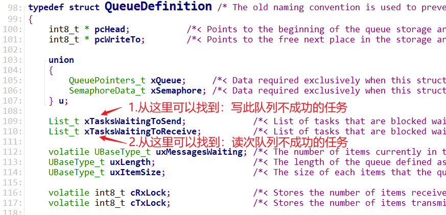
4.2 操作示例
参考程序：FreeRTOS_08_queue
4.2.1 写队列
调用过程：
xQueueSendToBack
xQueueGenericSend
/* 如果不成功: */
vTaskPlaceOnEventList( &( pxQueue->xTasksWaitingToSend ), xTicksToWait );
// 1. 当前任务记录在队列的链表里: pxQueue->xTasksWaitingToSend
vListInsert( pxEventList, &( pxCurrentTCB->xEventListItem ) );
// 2. 把当前任务从ready list放到delayed list
prvAddCurrentTaskToDelayedList( xTicksToWait, pdTRUE );
一个任务写队列时，如果队列已经满了，它会被挂起，何时被唤醒？
- 超时：
- 任务写队列不成功时，它会被挂起：从ready list移到delayed list中
- 在delayed list中，按照"超时时间"排序
-
系统Tick中断不断发生，在Tick中断里判断delayed list中的任务时间到没？时间到后就唤醒它
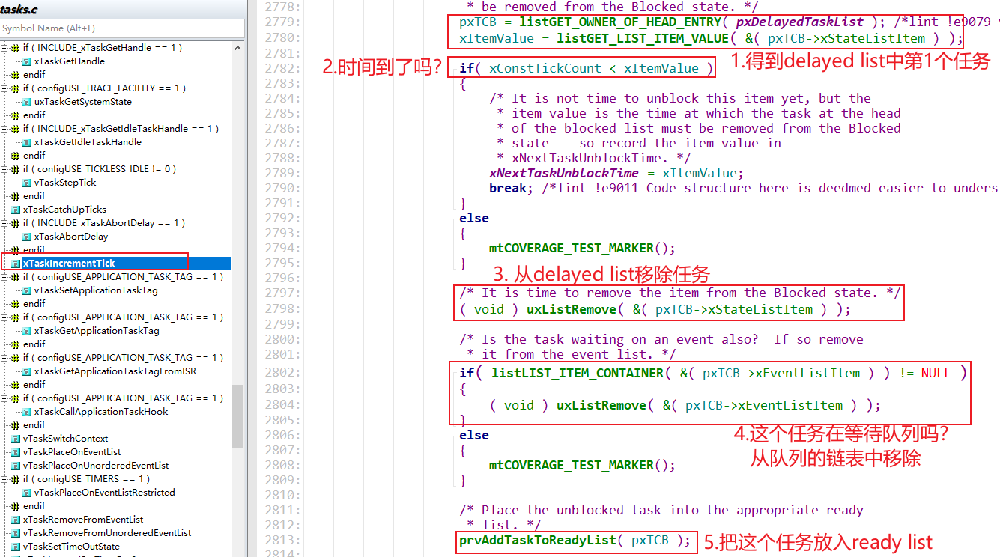
-
别的任务读队列:
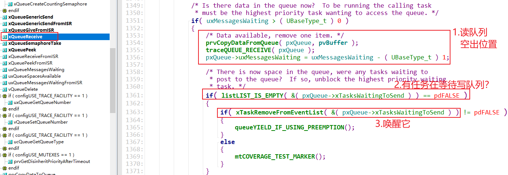
5. 信号量(semaphore)
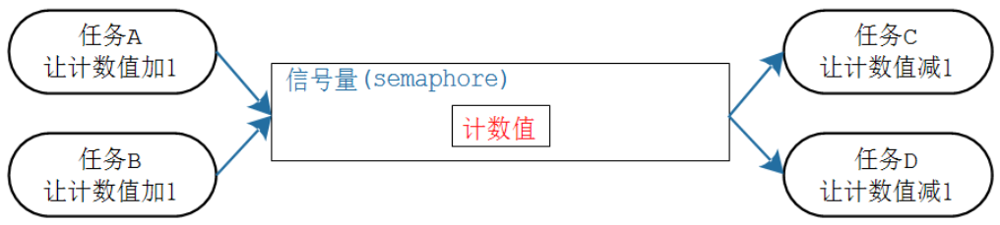
信号量就是特殊的队列。
队列里使用环形缓冲区存放数据，
信号量里只记录计数值。
6. 互斥量(mutex)
互斥量就是特殊的队列。
互斥量更是特殊的信号量，
互斥量实现了优先级继承。
7. 事件组(event group)
示例程序：FreeRTOS_20_event_group_wait_multi_events
学校组织秋游，组长在等待：
- 张三：我到了
- 李四：我到了
- 王五：我到了
- 组长说：好，大家都到齐了，出发！
秋游回来第二天就要提交一篇心得报告，组长在焦急等待：张三、李四、王五谁先写好就交谁的。
在这个日常生活场景中：
- 出发：要等待这3个人都到齐，他们是"与"的关系
- 交报告：只需等待这3人中的任何一个，他们是"或"的关系
在FreeRTOS中，可以使用事件组(event group)来解决这些问题。
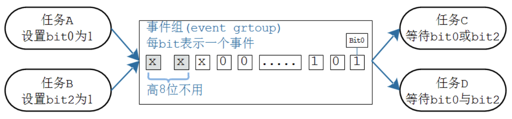
7.1 核心是：关调度器、位操作、链表
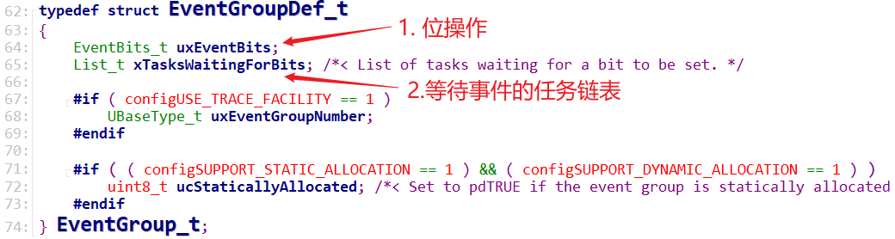
7.1.1 怎么互斥访问数据
简单粗暴：关调度器
示例：FreeRTOS_20_event_group_wait_multi_events
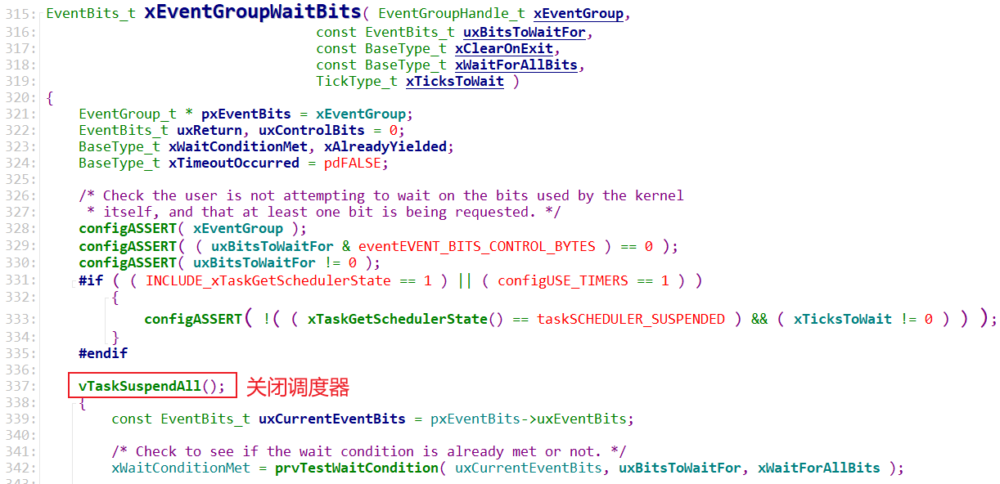
7.1.2 位操作
-
设置位：
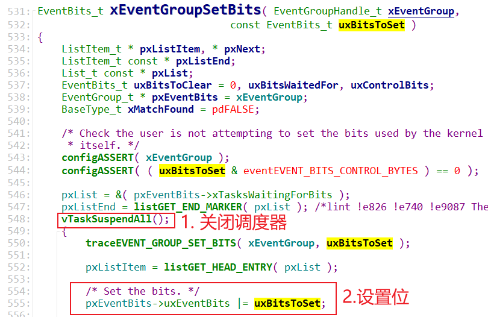
-
等待位
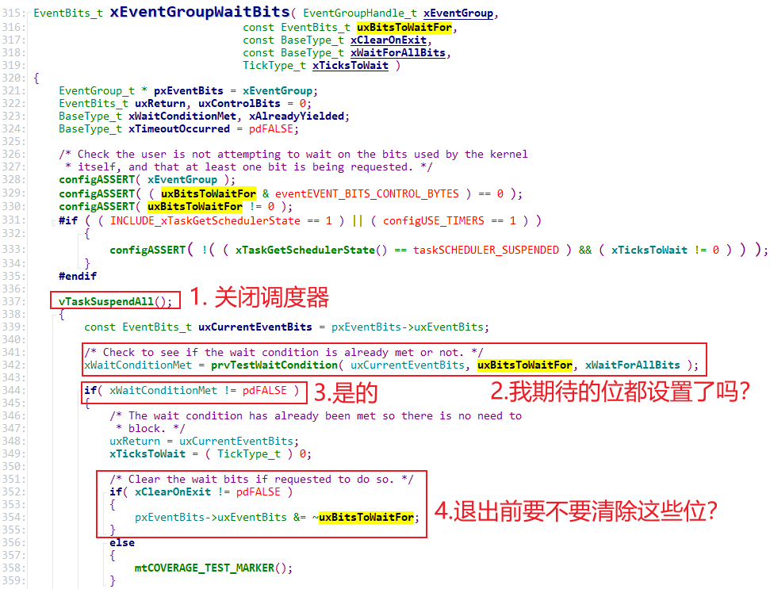
7.1.3 链表
- 设置位后，会唤醒"所有符合条件"的任务
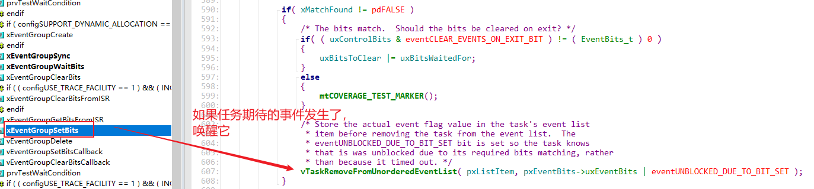
- 等待位的时候，条件不满足则会休眠
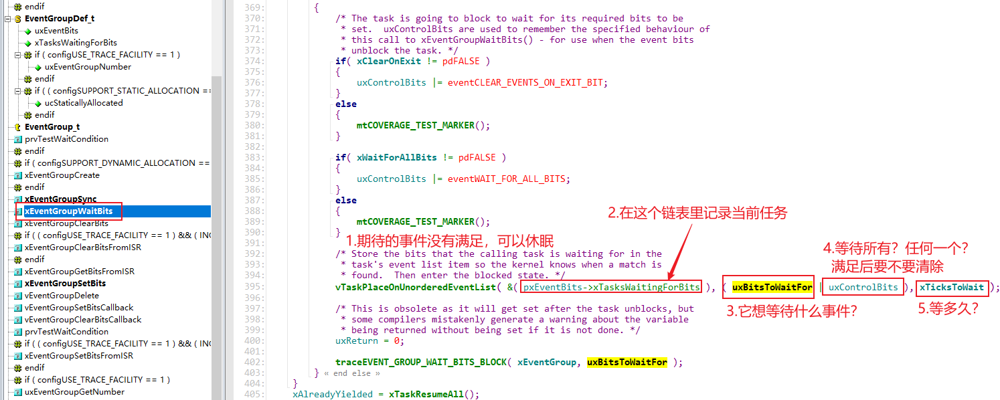
7.2 示例代码
示例程序：FreeRTOS_20_event_group_wait_multi_events
8. 任务通知(Task Notification)
示例程序：FreeRTOS_23_tasknotify_tansfer_value
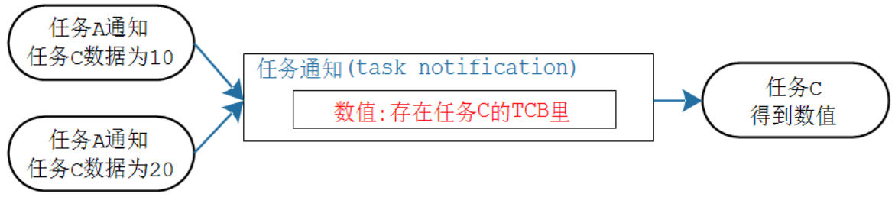
使用队列、信号量、互斥量、事件组等机制时，步骤都是这样的：
- 创建对象
- 写/Give
- 读/Take
对于任务通知，不需要"创建对象"，因为要操作的对象就在TCB里：
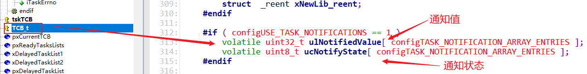
8.1 核心: 通知状态、通知值
8.1.1 通知状态
一个任务的"通知状态"有三种：
- taskNOT_WAITING_NOTIFICATION：任务没有在等待通知
- taskWAITING_NOTIFICATION：任务在等待通知
- taskNOTIFICATION_RECEIVED：任务接收到了通知，也被称为 pending(有数据了，待处理)
一个任务想等待别人发来通知，可以调用ulTaskNotifyTake或xTaskNotifyWait：
- 可能别人早就发来通知："通知状态"为taskNOTIFICATION_RECEIVED，那么函数立刻返回
- 可能别人还没发来通知：这些函数把"通知状态"从taskNOT_WAITING_NOTIFICATION改为taskWAITING_NOTIFICATION，然后休眠
别的任务可以使用xTaskNotifyGive或xTaskNotify给某个任务发通知：
- 会马上唤醒对方
- 无条件唤醒对方，不管对方期待什么数据
8.1.2 通知值
只是一个整数，调用xTaskNotifyGive或xTaskNotify时，传入不同的参数，可以去设置这个数值：
- 不改变它的数值，只想唤醒任务
- 增加1
- 设置为某个数
8.2 代码分析
9. 定时器
10. 中断
10.1 两套API
10.2 两类中断
10.3 优先级
11. 临界资源访问方法
taskENTER_CRITICAL();
/* 可以避免其他任务、ISR来破坏 */
taskEXIT_CRITICAL();
-----------------------------------------
vTaskSuspendAll();
/* 可以避免其他任务来破坏 */
( void ) xTaskResumeAll();